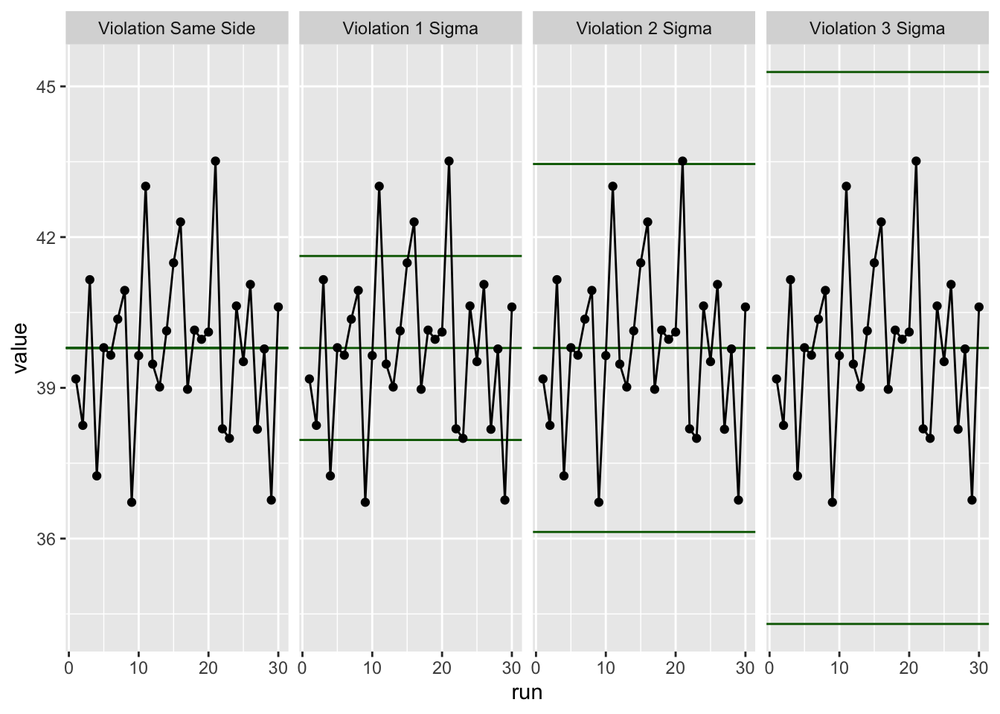

Levey-Jennings (LJ) charts are widely used in clinical and analytical laboratories as part of their quality control (QC) processes. They provide a visual representation of repeated experimental measurements of a known standard (an analyte of known concentration). These measurements are often taken daily (or every 12 hours in a 24-hour environment). The LJ chart allows the scientist to assess the consistency and reliability of an experimental procedure. Outliers, (or violations) are identified by following a set of rules. NHS pathology services and many analytical laboratories follow the Westgard Rules. These outliers may indicate that the experimental procedure is not performing to the required standard. However, as we shall see below, occasional outliers are expected even under normal conditions, as random variation in data following a normal distribution will produce such values.
Below, we will generate a Levey-Jennings chart and apply a set of rules to identify outliers. First, install the ggQC package and load the libraries that we need.
# If you don't have ggQC package installed, uncheck the line below and run the install.packages() command to install ggQC package; then delete this line or check it back# install.packages("ggQC")library (ggQC)library(tidyverse)
── Attaching core tidyverse packages ──────────────────────── tidyverse 2.0.0 ──
✔ dplyr 1.1.4 ✔ readr 2.1.5
✔ forcats 1.0.0 ✔ stringr 1.5.1
✔ ggplot2 3.5.1 ✔ tibble 3.2.1
✔ lubridate 1.9.3 ✔ tidyr 1.3.1
✔ purrr 1.0.2
── Conflicts ────────────────────────────────────────── tidyverse_conflicts() ──
✖ dplyr::filter() masks stats::filter()
✖ dplyr::lag() masks stats::lag()
ℹ Use the conflicted package (<http://conflicted.r-lib.org/>) to force all conflicts to become errors
We need to generate some sample data.. The “run” is the day of the assay (1-30) The “value” is the result of the assay.
We will now generate a Levey-Jennings plot of the data using the code below. The blue line in the centre is the mean. The red lines indicate 1, 2 or 3 standard deviations from the mean. In this case, both the mean and SD are calculated from the data. Sometimes a LJ chart is generated using a previously established true value of the standard with an associated SD. Many other options are available as part of the ggQC package. In addition, you can generate different types of quality control charts. You can read more here
df |>ggplot(aes(x = run, y = value)) +#start ggplotgeom_point() +geom_line() +# add the data points and the linestat_QC(method ="XmR", # XmR is for individual data points with a moving Rangeauto.label =TRUE, # Use Autolabelslabel.digits =1, # Use one digit in the labelshow.1n2.sigma =TRUE) # Show 1 and 2 sigma (SD) lines
Look at the plot above and compare these results to the Westgard Rules
In the data above, three of the Westgard rules have been violated. Can you identify the runs that are a problem? No code is required here, simply look at the plot above and compare the result to the Westgard Rules on the website above.
Check your answer by running the code below. This generates a facet plot, highlighting violations in red.
#create facet plot with QC violationsggplot(df, aes(x = run, y = value)) +#init ggplotstat_qc_violations(method ="XmR" )
Now, place your cursor over “stat_qc_violations” and press F1. You will see that the QC violations in the ggQC package are based on these rules below:
Violation Same Side: 8 or more consecutive, same-side points
Violation 1 Sigma: 4 or more consecutive, same-side points exceeding 1 sigma
Violation 2 Sigma: 2 or more consecutive, same-side points exceeding 2 sigma
Violation 3 Sigma: any points exceeding 3 sigma
Notice that the first of these rules is not identical to the Westgard rule. For rule 1, this package is slightly more sensitive as it highlights violations where there are 8 or more consecutive same-side points, while the equivalent Westgard rule states 10 or more same-side points. The other 3 rules above have an equivalent Westgard rule.
This is important as various sets of rules for detecting out-of-control or non-random conditions have been proposed and used for different applications:
Walter A. Shewhart (1923) Economic Control Of Quality Of Manufactured Product
Western Electric Rules- Western Electric Company (1956), Statistical Quality Control Handbook. (1 ed.)
Always follow the protocol and quality control processes that are used in your workplace – it will vary!
15.2 Testing for outliers using normally distributed data
The data provided above was deliberately manipulated to introduce three rule violations. If this was your actual data from one month in an analytical laboratory, it would indicate that serious errors are occurring on a regular basis. You would need to rectify the problem(s) before running any real samples. If your data is from a normal distribution then outliers detected by these rules are quite rare, but they do happen, even if nothing is wrong with the equipment or the user. Use the code below to generate QC plots of 30 data points from a normal distribution with a mean of 40 and SD = 2. Run this code 12 times to see how often outliers might occur in one year under ideal conditions. Remember, if any outliers are detected, even at these rare intevals, you would still need to check all of your equipment and reagents, as you would have no way of knowing if it is a malfunction or just random noise.
# Generate some random data and plot ittibble(run =c(1:30),value =rnorm(30, mean =40, sd =2),) |>ggplot (aes(x = run, y = value)) +stat_qc_violations(method ="XmR" )

Question
How many times were outliers detected? Why are these rules designed so that outliers are rare?
15.3 Further Work
You may have noticed that in the first graph above, the mean was 50.3. This value was calculated from the data. In many analytical processes, the standard will be of a known concentration and the process will have a well established standard deviation. Let us assume that for the data above, the known standard should be 50 units with a standard deviation of 1.3. Can you write R-code to generate a plot of the same data but with:
with a blue dashed horizontal line at exactly 50 units, label it “50” or “mean”
with faint red dashed lines to indicate 1, 2 or 3 standard deviations from 50. Label these lines with “-1 SD”, “+1 SD”, “-2 SD”, “+2 SD” etc.
Tips
use geom_seqment rather than geom_hline as this allows you to control the endpoint with xend = 30
use annotate to add a text label. Set the x = 30.5 as this is the right-side of the plot. Set the y-value to the correct numerical values to get -1 SD, +1 SD, -2 SD, +2 SD etc
#this is to get you starteddf |>ggplot(aes(x= run, y=value))+geom_line()+geom_point()+geom_segment(aes(x =1, xend =30, y =50, yend =50), # sets the start and end pointscolor ="blue", # makes it bluelinetype ="dashed", # dashedlinewidth =0.5) +# fine annotate("text", x =30.5, y =50, label ="50", hjust =0, color ="blue") # adds the label "50"
Warning in geom_segment(aes(x = 1, xend = 30, y = 50, yend = 50), color = "blue", : All aesthetics have length 1, but the data has 30 rows.
ℹ Please consider using `annotate()` or provide this layer with data containing
a single row.
15.4 References
Levey, S., & Jennings, E. R. (1950). The use of control charts in the clinical laboratory. American Journal of Clinical Pathology, 20(11), 1059–1066. https://doi.org/10.1093/ajcp/20.11_ts.1059
Shewhart, W.A., (1923) Economic Control Of Quality Of Manufactured Product
Westgard, J. O., Barry, P. L., Hunt, M. R., & Groth, T. (1981). A multi-rule Shewhart chart for quality control in clinical chemistry. Clinical Chemistry, 27(3), 493–501.
Western Electric Rules - Western Electric Company (1956), Statistical Quality Control Handbook (1 ed.).